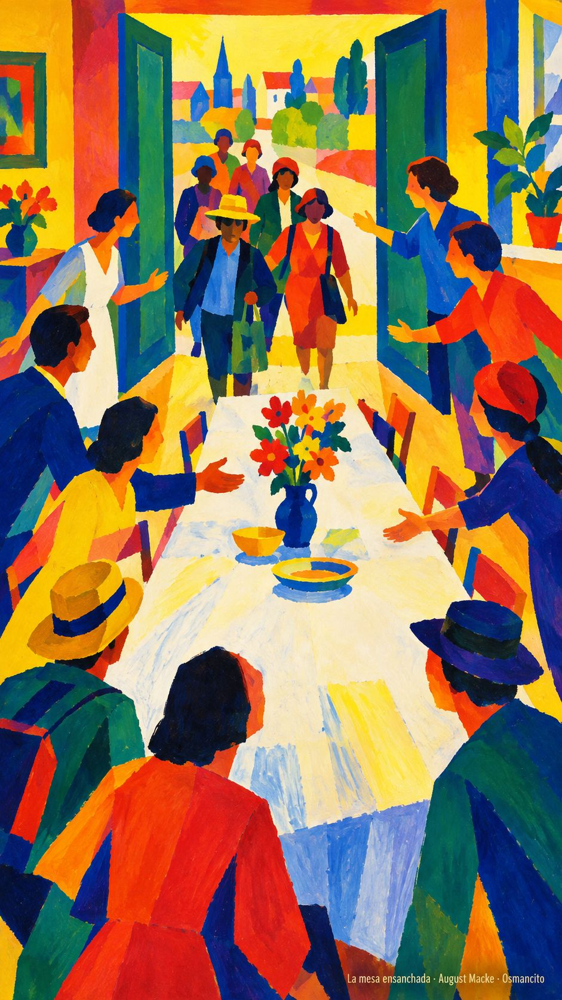
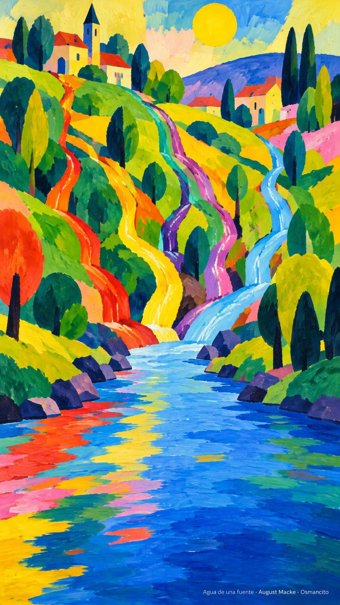

21 de octubre de 2026
¡Buenos días!
La herencia de todos
11
También los paganos son coherederos de la misma herencia, miembros del mismo cuerpo y partícipes de la misma promesa en Jesucristo
Efesios 3,6. Fuente
Que nadie se quede fuera de la casa por llegar de lejos. Que aprendamos a decir hermano sin revisar primero el apellido ni el acento. Que la mesa se ensanche cuando alguien nuevo se acerque y la promesa no tenga aduana. Que seamos coherederos alegres de una herencia que no se gasta: cuerpo del mismo cuerpo, agua de la misma fuente. Que la sabiduría de Dios, que es multiforme, nos encuentre juntos y no repartidos.

- La mesa que se ensancha para el que llega recoge Efesios 3: la herencia no tiene aduana.

- Los arroyos reunidos en un solo cauce encarnan el mismo cuerpo y la misma promesa.
¡Feliz miércoles 21 de octubre!
😊🙋♂